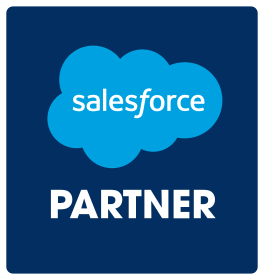
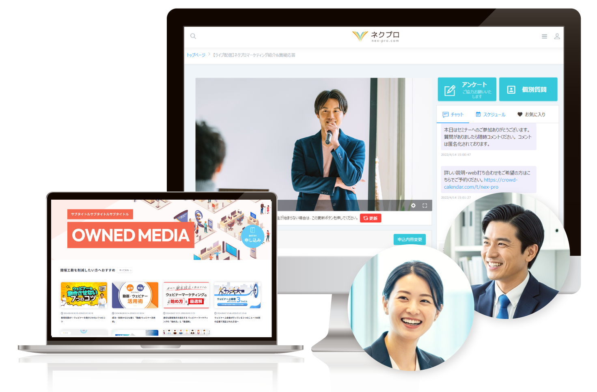

ウェビナー・動画メディアのオールインワンプラットフォーム
ウェビナーで、リードを獲る。メディアサイトで、つながる。
ウェビナーからメディアサイト構築までがシームレスに。ネクプロは動画の力を最大化するプラットフォームです。



※1 ITreview Grid Award 2026 Winter「ウェビナーツール」部門13期連続、「動画配信システム」部門15期連続で受賞（2026年1月現在）
※2 スマートキャンプ株式会社主催「BOXIL SaaS AWARD 2024」BOXIL SaaSセクションウェビナーツール部門1位を受賞（2024年3月現在）。
